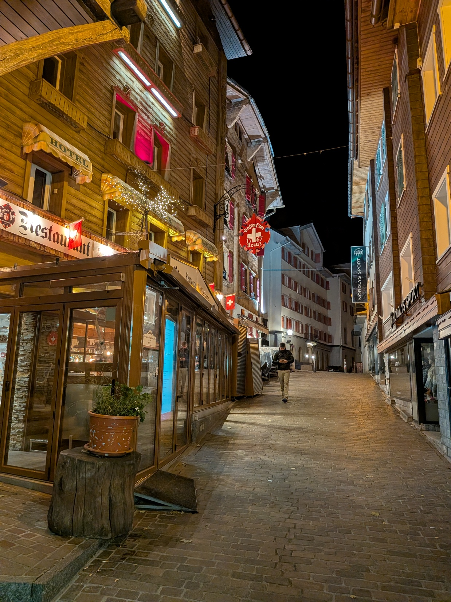
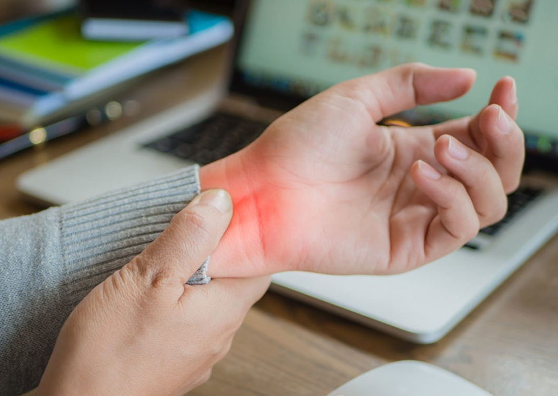
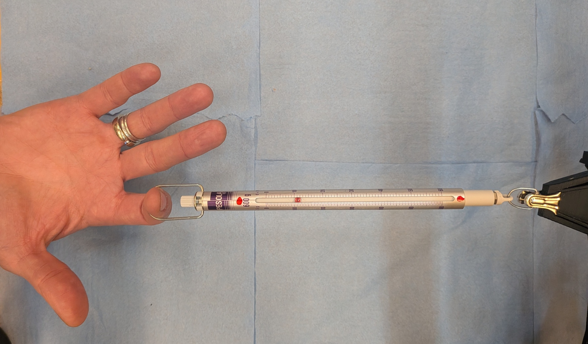
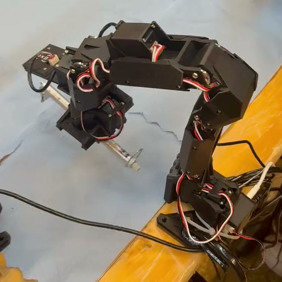
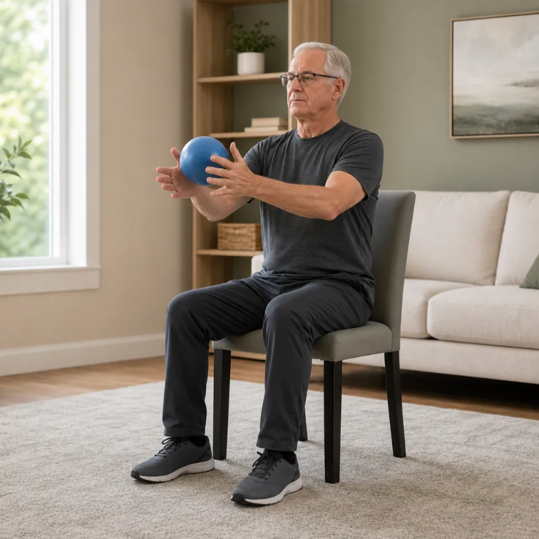
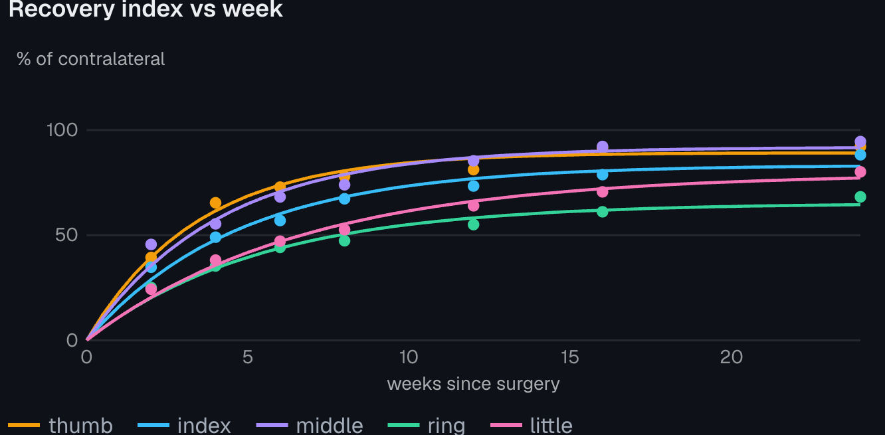
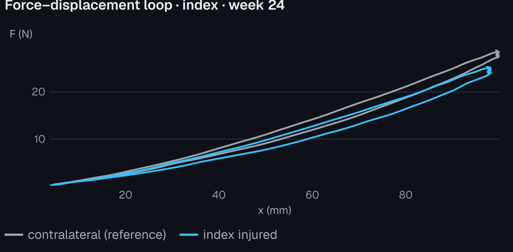
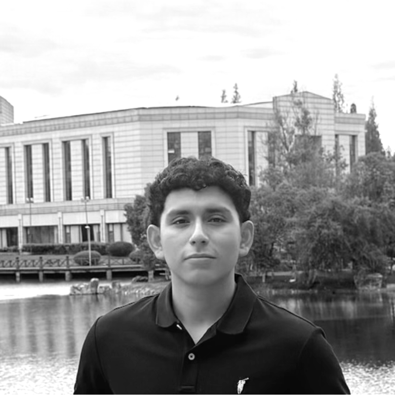
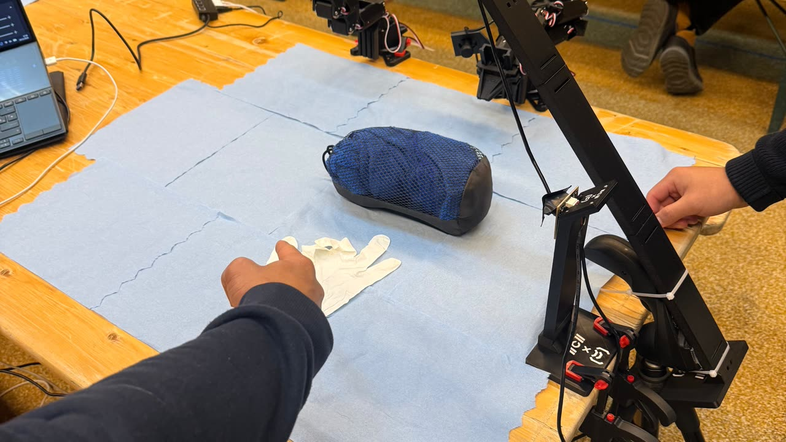
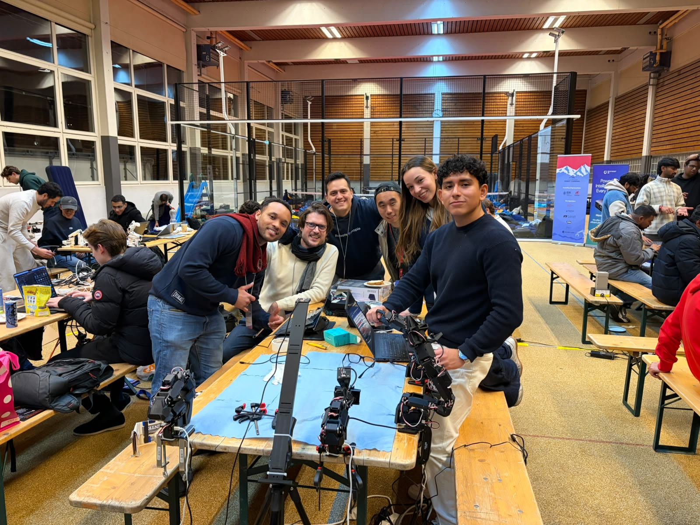

Robot-assisted finger rehabilitation after hand surgery, with a force limit the physiotherapist sets remotely.

workers in Europe will retire by 2035, taking critical rehab-care know-how with them.
A major risk to care capacity: daily help, rehabilitation and mobility.
After surgery, for example for carpal tunnel syndrome.
A specialist physiotherapist controls and follows each session.


The finger pulls against a robot arm through a spring scale. At the physiotherapist's limit, the arm gives way.
The physiotherapist sets the limit. The robot guides. The patient exercises at home.


The finger pulls on a spring scale held by the robot arm. A camera reads the scale in grams.
Filmed at our table in Leukerbad, at real speed.




